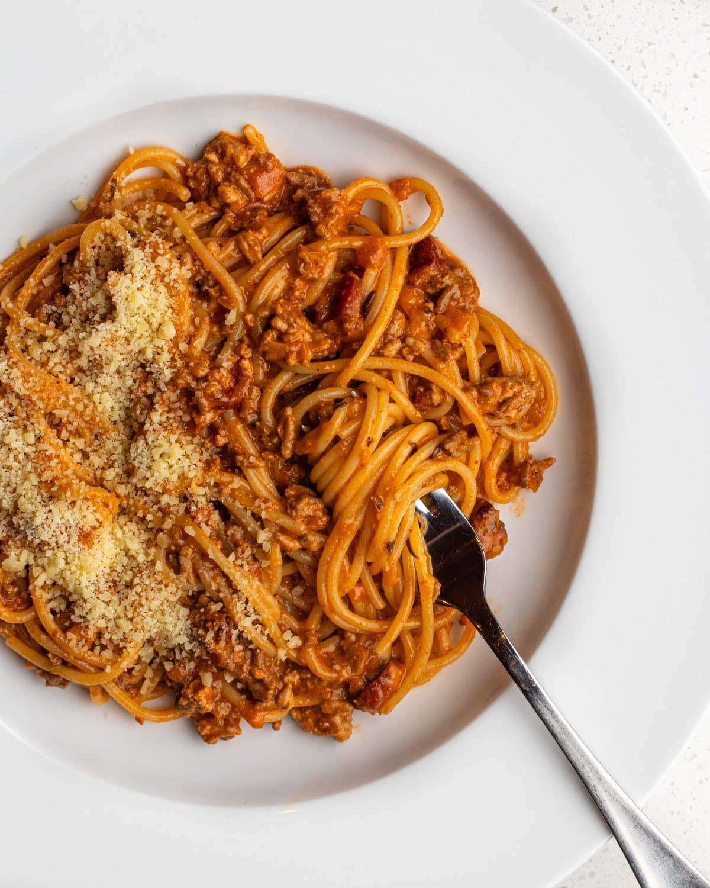

Bolognese
Recipe by: My Dad

Description
A family favourite Spaghetti Bolognese Recipe
passed down to me from my father. It blends traditional
pasta flavours of beef, oregano, onions, garlic and tomato
to create a rich meaty sauce that keeps well for weeks.
Ingredients
- Spaghetti
- Beef Mince
- Fresh Tomato
- Canned Tomato Sauce
- Onions
- Garlic
- Oregano
- Black Pepper
- Salt
- Carrot
Instructions
-
Dice your Onions and Mince you garlic pressing both into the Beef Mince
then Salt and Pepper the Beef Mince.
-
Heat a deep Sauce pot over a Medium High heat then add the beef mince with
the Fresh tomato chopped into chunks.
-
Once the beef is browned add your Canned Tomato Sauce, Oregano and Black Pepper, reduce the heat to low
and let simmer covered for 30 minutes stirring occasionally.
-
After 30 minutes, Add sliced Carrots and some more oregano, salt and pepper to taste and cover again to cook for 20 minutes
stirring occasionally.
-
Put a Pot of water on to boil adding some salt to the water, then once the water is at a rolling boil
add your Spaghetti and stir so the noodles do not stick together.
-
Once the Spaghetti is al dente remove from the water and drain in a colander, pour cold water on top of the pasta
to stop it from cooking any further and drain once more.
-
Place some pasta into a plate or a bowl and ladle a nice helping of sauce on top, and serve.